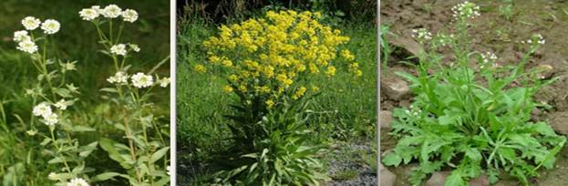

Семейство Крестоцветные довольно многочисленно и заселяет менее комфортные и более экстремальные зоны. Они сконцентрированы в умеренной зоне северного полушария, главным образом, в Старом Свете. В тропиках Крестоцветные представлены единичными родами в горных районах. Встречаются по морским побережьям, в Арктической области, в степи, пустыне и полупустыне. У семейства Крестоцветные есть и другое название – Капустные, это семейство принадлежит к классу двудольных растений. Наиболее важный культурный представитель – капуста. Кроме капусты, к этому семейству относятся овощи корнеплоды: репа, редька, редис, хрен, горчица (Рис. 1).
Рис. 1. Семейство Крестоцветные: капуста, редис, редька, репа, хрен (Источник)
Декоративных растений среди крестоцветных мало. Можно вспомнить только левкой (маттиола) (Рис. 2) и лунарию (Рис. 3), замечательное растение из сухоцветных.
Рис. 2. Левкой (маттиола) (Источник)
Рис. 3. Лунария (Источник)
Дикорастущих крестоцветных растений очень много. Например, мелкие жерушники и желтушники (Рис. 4) или, наоборот, крупное, с небольшой кустарник, – свербига, растение со смешным названием – икотник, тоже относится к крестоцветным (Рис. 5).
Рис. 4. Жерушник и желтушник (Источник)
Среди дикорастущих крестоцветных ученые считают самым распространенным в мире растением пастушью сумку (Рис. 5).

Рис. 5. Икотник, свербига и пастушья сумка (Источник)
Цветки обычно лишены как прицветников, так и прицветничков, некрупные, зачастую очень мелкие, невзрачные. По своему строению они крайне однообразны. Это семейство относится к классу двудольных, значит, цветок должен иметь двойной околоцветник. В цветке мы видим чашечку и венчик, чашечка у крестоцветных состоит из четырех чашелистиков, венчик состоит из четырех лепестков (Рис. 6).
Рис. 6. Строение цветка (Источник)
Лепестки располагаются друг напротив друга крест-накрест, тогда становится ясным и название – крестоцветные.
Внутри от лепестков находятся шесть тычинок, которые не одинаковы и располагаются на разном расстоянии от центра цветка. Две из них располагаются немножко дальше от центра, а четыре тычинки располагаются ближе к центру, образуя еще один круг тычинок. Вполне возможно, что предки крестоцветных или какие-то ранние представители этого семейства обладали восемью тычинками, расположенными в два круга по четыре тычинки в каждом. Две тычинки из наружного круга, видимо, во время эволюции утратились.
Удлиненные плоды, длина которых значительно превышает ширину, называются стручками, короткие же – стручочками. Пестик в цветке крестоцветных один, завязь его разделена на две камеры – на две половинки, это важно, так как из этого пестика вырастает плод-стручок. Стручок – сухой, многосемянный. Скрывающийся плод внутри разделен перегородкой на две камеры, эта перегородка заложена еще в завязи пестика (Рис. 7).
Рис. 7. Стручки (Источник)
Стручки – это плоды крестоцветных, о плодах пастушьей сумки стоит поговорить особо в дополнении к уроку – там плод не совсем стручок. Семена в стручке прикреплены к перегородке, здесь они ожидают, когда створки плода растрескаются и раскроются.
Крестоцветные не неженки, они умеют вытеснять многие другие растения с плодородной почвы, то есть они умеют быть сорняками. Есть крестоцветные, которые растут в горах и даже в воде, мы встречаем представителей этого семейства довольно-таки в разнообразных условиях обитания.
У всех перечисленных нами растений растений – репы, редьки, хрена, редиса – имеются метаморфозы, изменение вегетативных органов. Эти овощи – корнеплоды, у капусты очевидное видоизменение – это кочан. У многих крестоцветных укороченные побеги, которые образуют розеточный побег, то есть листья у многих крестоцветных растений образуют круг, лежащий просто на земле (Рис. 8).
Рис. 8. Розеточные побеги левкоя (Источник)
Многие из крестоцветных – не только важные огородные растения, доставляющие обильную и здоровую пищу, но и обладают целебными свойствами и применяются в народной медицине. Особенно это касается горчицы и пастушьей сумки, которые по популярности и действенности занимают первые места при лечении ревматизма, ишиаса, подагры, как средство против инфекций полости рта и обработки плохо заживающих ран.
Список литературы
1. Пасечник В.В. Биология 6 класс. Бактерии, грибы, растения. – Дрофа, 2011.
2. Корчагина В.А. Биология 6-7 классы. Растения, бактерии, грибы, лишайники. – 1993.
3. Пономарева И.Н., Корнилова О.А., Кучменко В.С. Биология 6 класс. – 2008.
Домашнее задание
1. Назовите представителей семейства Крестоцветные.
2. Каковы особенности их цветка?
3. Как плодятся крестоцветные?
Дополнительные рекомендованные ссылки на ресурсы сети Интернет
1. Интернет-портал Festival.1september.ru (Источник).
2. Интернет-портал Biologiya.net (Источник).
3. Интернет-портал Valleyflora.ru (Источник).